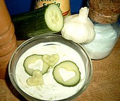

Tzatziki Rezept

Vorspeise
Zutaten für 4 Personen:
- 250 g Crème fraîche und Joghurt
- 1 kleine Knoblauchzehe
- 1 EL Dill
- Salz, Pfeffer
- 250 g Gurke
Zubereitung:
- Die geschälte Gurke der Länge nach halbieren und mit einem Teelöffel die Kerne entfernen.
- Gurke grob raffeln oder klein würfeln und in einem sauberen Tuch auspressen und abtropfen lassen.
- Die Joghurt-Crème fraîche-Mischung in eine Schüssel geben und mit frischem gehacktem Dill, Salz und Pfeffer würzen.
- Knoblauch pressen und dazugeben.
- Die abgetropften Gurkenstücke darunter mischen.
- Im Kühlschrank einige Zeit kalt stellen.
Passt zu:
Gegrilltem, Salaten oder einfach als Dip
Author:
Fabian